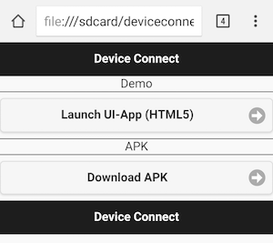
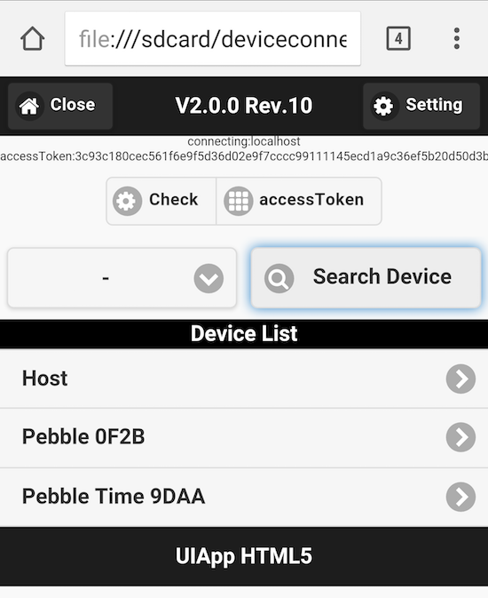
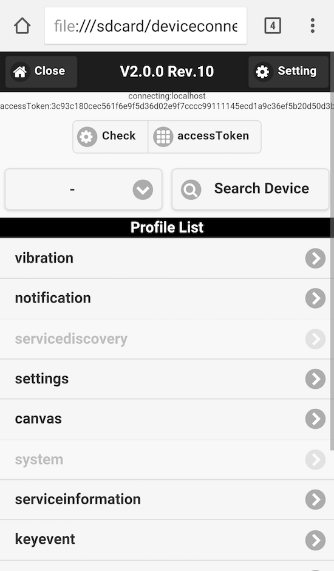

デモサイトの使い方
デモサイトはDeviceConnectのWeb APIを試せるKitchen Sinkになっています。実際には静的なHTMLです。
導入方法は2つあります。
ダウンロード
こちらのデモファイル をダウンロードして、解凍した内容をAndroidの内部ストレージにコピーします。
後はAndroidのChromeアプリでindex.htmlを開けばOKです。
Webからアクセス
こちらに同じものをアップロードしてあります。Androidのブラウザで http://deviceconnectusers.github.io/manager/を開いてください。
使い方
トップページ
トップページにアクセスしたら、まずは Launch UI-App をタップします。

そうすると下のような画面が表示されるので、accessTokenボタンをタップします。

アクセスを許可するためのダイアログが出ますので、ACCEPTをタップしてください。

そうするとアクセストークンが表示されます。これで準備完了です。

デバイスリストの取得
次に操作するデバイスを検索します。Search Devicesをタップします。そうすると下にあるリストが更新され、利用できるデバイスが一覧されます。

その中のデバイスをタップすると、利用できる機能が一覧されます。

例えばこれはバイブレーションAPIを実行しようとしているところです。

このようにデモサイトを使えばDeviceConnectでできる機能が一通り試せるようになっています。JavaScript SDKも組み込まれていますので、その実装方法の参考にもなりそうです。